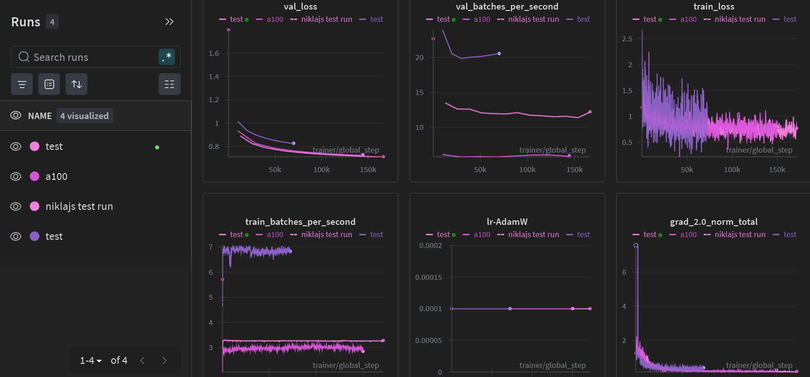
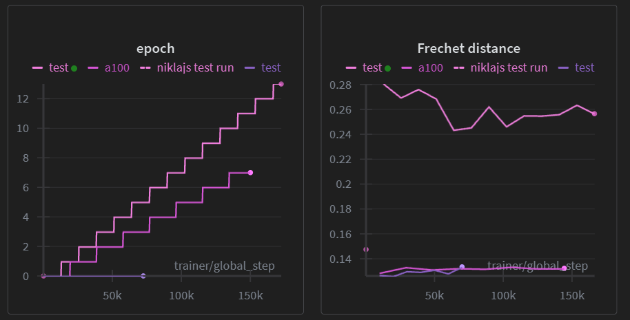
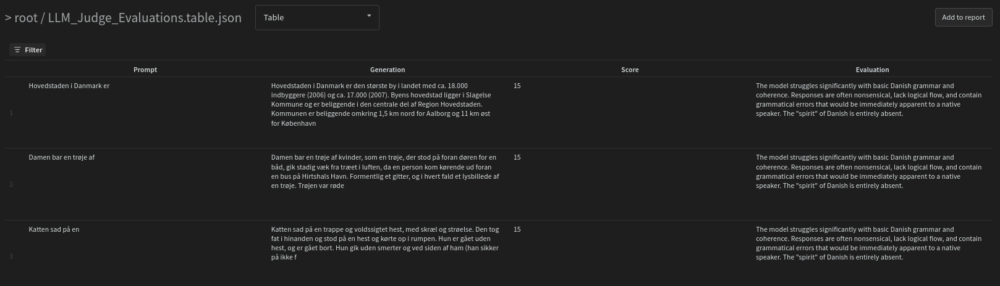
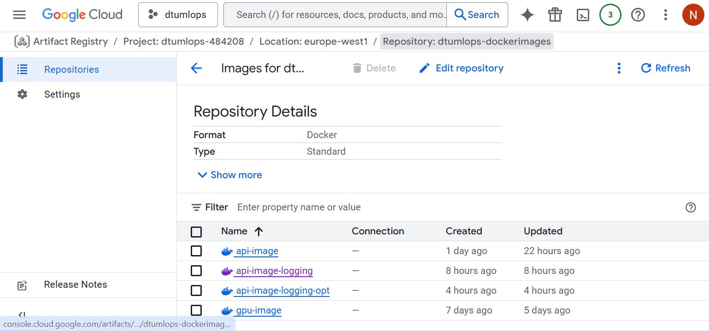
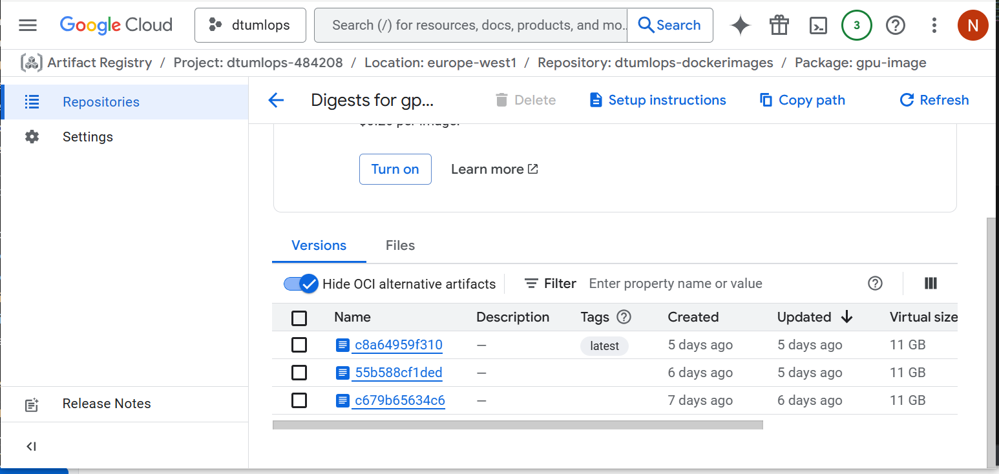
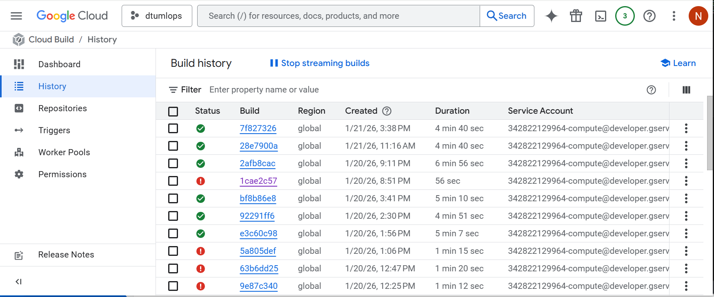
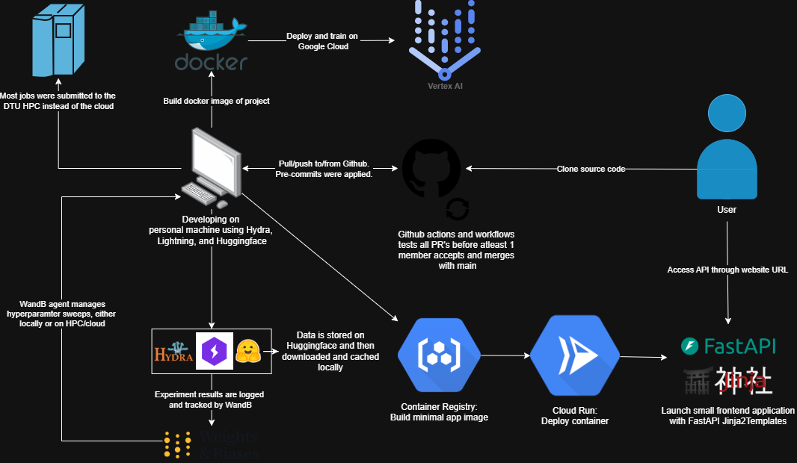

{kind=link}

Operations
This is the report template for the exam. Please only remove the text formatted as with three dashes in front and behind like:
--- question 1 fill here ---
Where you instead should add your answers. Any other changes may have unwanted consequences when your report is
auto-generated at the end of the course. For questions where you are asked to include images, start by adding the image
to the figures subfolder (please only use .png, .jpg or .jpeg) and then add the following code in your answer:

In addition to this markdown file, we also provide the report.py script that provides two utility functions:
Running:
bash
python report.py html
Will generate a .html page of your report. After the deadline for answering this template, we will auto-scrape
everything in this reports folder and then use this utility to generate a .html page that will be your serve
as your final hand-in.
Running
bash
python report.py check
Will check your answers in this template against the constraints listed for each question e.g. is your answer too short, too long, or have you included an image when asked. For both functions to work you mustn't rename anything. The script has two dependencies that can be installed with
bash
pip install typer markdown
or
bash
uv add typer markdown
The checklist is exhaustive which means that it includes everything that you could do on the project included in the curriculum in this course. Therefore, we do not expect at all that you have checked all boxes at the end of the project. The parenthesis at the end indicates what module the bullet point is related to. Please be honest in your answers, we will check the repositories and the code to verify your answers.
data.py file such that it downloads whatever data you need and preprocesses it (if necessary) (M6)model.py and a training procedure to train.py and get that running (M6)requirements.txt/requirements_dev.txt files or keeping your
pyproject.toml/uv.lock up-to-date with whatever dependencies that you are using (M2+M6)pep8) while doing the project (M7)Enter the group number you signed up on
Answer:
group 62
Enter the study number for each member in the group
Example:
sXXXXXX, sXXXXXX, sXXXXXX
Answer:
s214657, s214615, s214653, s214630
Did you end up using any open-source frameworks/packages not covered in the course during your project? If so which did you use and how did they help you complete the project?
Recommended answer length: 0-200 words.
Example: We used the third-party framework ... in our project. We used functionality ... and functionality ... from the package to do ... and ... in our project.
Answer:
We used HuggingFace to 1) implement HuggingFace transformer architectures and 2) to implement large text datasets that are publicly available on Huggingface. This meant that we didn't have to implement our own tokenizers, transformers, loss functions, and so on, and instead fully focus on the MLOps part of the project. Huggingface also hosts a large number of public datasets, including danish text datasets that was needed for our project. Huggingface also manages data version control of these datasets. This meant that we didn't have to store the data ourselves.
In the following section we are interested in learning more about you local development environment. This includes how you managed dependencies, the structure of your code and how you managed code quality.
Explain how you managed dependencies in your project? Explain the process a new team member would have to go through to get an exact copy of your environment.
Recommended answer length: 100-200 words
Example: We used ... for managing our dependencies. The list of dependencies was auto-generated using ... . To get a complete copy of our development environment, one would have to run the following commands
Answer:
A new member should start out by cloning our github repo "https://github.com/kommodeskab/mlops-hestnet" using git. Then he or she should create a project specific virtual environment by running uvx invoke build in the project root directory in a terminal with uv installed. This command installs the necessary dependencies with the correct versions from the pyproject.toml file automatically using u, and it also creates the necessary files and folders that are not tracked by git, such as the logs and data folders and the .env file. We used invoke extensively in this project. To begin working in the newly created environment, one can activate it by typing "source .venv/bin/activate" and it should be ready. Alternatively, one could use uv run before any commands that required a package from the environment. The last thing is to create a development branch so we ensure main is always stable and is only modified through pull requests approved by other team members. Creation of a branch is easy with "git checkout -b
We expect that you initialized your project using the cookiecutter template. Explain the overall structure of your code. What did you fill out? Did you deviate from the template in some way?
Recommended answer length: 100-200 words
Example: From the cookiecutter template we have filled out the ... , ... and ... folder. We have removed the ... folder because we did not use any ... in our project. We have added an ... folder that contains ... for running our experiments.
Answer:
We decided to use our own template that already had a lot of functionality implemented, including Pytorch Lightning, WandB, and Hydra. We decided to use this template since we already had experience with these frameworks in this template; therefore we could focus on learning methods (instead of re-implementing things we already knew). Furthermore we expanded the template significantly in the first week of the course by incorporating tools taught in the course. From the "https://github.com/kommodeskab/Template", which is more or less similar to the cookiecutter template in structure, we have filled out the following folders and files: .devcontainer/Dockerfile, .devcontainer/devcontainer.json, .github/workflows, the configs/ folder containing callbacks, data, experiment, logger, model, trainer config files. We have also filled out the src/ folder with the files callbacks, data_modules, datasets, lightning_modules, losses, networks, tests. Furthermore we of course used .env, .gitignore, .pre-commit-config.yaml, pyproject.toml, tasks.py, uv.lock, README.md and most importantly main.py. We have created extra files for flexibility where suitable, such as configs/trainer/cpu.yaml, configs/trainer/gpu.yaml, configs/trainer/multi_gpu.yaml for different training situations.
Did you implement any rules for code quality and format? What about typing and documentation? Additionally, explain with your own words why these concepts matters in larger projects.
Recommended answer length: 100-200 words.
Example: We used ... for linting and ... for formatting. We also used ... for typing and ... for documentation. These concepts are important in larger projects because ... . For example, typing ...
Answer:
We used ruff to enforce code quality and formatting rules in the project. Ruff was configured to handle both linting and formatting, ensuring a consistent code style and catching common issues such as unused imports and inconsisent formatting. This helped keep the codebase clean and readable. For typing, we used Python type hints throughout the code. We used mypy to test the quality of our typehints. We made a simple task that automatically checked the typehinting in the whole codebase (invoke typing) or in a specific file (invoke typing --filename <path-to-file-or-directory>). The explicit input and output types improved code clarity, made it easier to understand how different components interacted, and helped catch errors early. This was especially useful for refactoring or extending the code. For documentation, we relied on docstrings following standard Python conventions. These described the purpose of modules, functions, and key parameters, making the code easier to understand for collaborators and for future maintenance. In larger projects, these concepts matter because code is often "read more than it is written" - Guido himself. Consistent formatting, clear typing, and good documentation reduce misunderstandings, eases onboarding of new contributors, and lower the risk of subtle bugs as the project grows.
In the following section we are interested in how version control was used in your project during development to corporate and increase the quality of your code.
How many tests did you implement and what are they testing in your code?
Recommended answer length: 50-100 words.
Example: In total we have implemented X tests. Primarily we are testing ... and ... as these the most critical parts of our application but also ... .
Answer:
In total we have implemented 24 test functions, and made extensive use of pytest's fixture, parametrize and mock features. Since testing in ML pipelines differs from traditional software applications, we have primarily focused our test coverage around data handling, network architecture and training callbacks. 22 tests are marked as unit tests and 2 tests are marked as integration tests. The latter are only run conditionally, as they make API calls to google cloud. The conftest.py file implements a small synthetic dataset that patches the hugginface load_dataset() call at test time to keep the test footprint small.
What is the total code coverage (in percentage) of your code? If your code had a code coverage of 100% (or close to), would you still trust it to be error free? Explain you reasoning.
Recommended answer length: 100-200 words.
Example: The total code coverage of code is X%, which includes all our source code. We are far from 100% coverage of our ** code and even if we were then...*
Answer:
The total code coverage of our tests is 54\% with 593 so-called statements whereof 272 were NOT being tested. We made a task for quickly outputting the code coverage in the terminal: invoke coverage. Ideally, we would of course like to have 100\% code coverage, especially in a more professional project, but this would also necessitate more monkey-patching for API calls, large models and datasets, and would not necessarily test the parts of the code we are concerned about, such as can it function in an production environment and will it go OOM?
It is also important to remember that even with 100\% code coverage, code is not immune to bugs. It depends on the quality of tests, whether edge cases are checked and whether API's are interfaced with correctly. It is possible to write a test that covers a large portion of the code but doesn't actually make the right assumptions about how the code should be tested. We found it very difficult to write tests that could successfully debug a full training script. We worked hard to use mock functions to inspect values logged to Wandb and conditionally test real API calls to Gemini.
Did you workflow include using branches and pull requests? If yes, explain how. If not, explain how branches and pull request can help improve version control.
Recommended answer length: 100-200 words.
Example: We made use of both branches and PRs in our project. In our group, each member had an branch that they worked on in addition to the main branch. To merge code we ...
Answer:
We made use of both branches and pull requests (PRs) in our project. In our group, each feature or subproject had its own dedicated branch with the naming convention dev/
Did you use DVC for managing data in your project? If yes, then how did it improve your project to have version control of your data. If no, explain a case where it would be beneficial to have version control of your data.
Recommended answer length: 100-200 words.
Example: We did make use of DVC in the following way: ... . In the end it helped us in ... for controlling ... part of our pipeline
Answer:
We did not make use of DVC in our project, mainly because we were working with static text datasets obtained from Hugging Face. The data did not change over time, and there was no data collection or preprocessing pipeline that would introduce multiple versions of the dataset. As a result, traditional version control for code was sufficient for our use case, and adding DVC would have introduced unnecessary complexity without clear benefits. However, DVC would be highly beneficial in a project where the data evolves over time or is generated dynamically. For example, in a deployed machine learning system that continuously receives new data, version control of datasets would be crucial for tracking data drift and ensuring reproducibility. With DVC, it would be possible to link specific model versions to the exact data used during training, making debugging and rollback much easier. This is especially important in production settings, where changes in data distribution can significantly impact model performance and reliability.
Discuss you continuous integration setup. What kind of continuous integration are you running (unittesting, linting, etc.)? Do you test multiple operating systems, Python version etc. Do you make use of caching? Feel free to insert a link to one of your GitHub actions workflow.
Recommended answer length: 200-300 words.
Example: We have organized our continuous integration into 3 separate files: one for doing ..., one for running ... testing and one for running ... . In particular for our ..., we used ... .An example of a triggered workflow can be seen here:
Answer:
We use Github actions for 1) weekly dependabot alerts, 2) code formatting, and 3) running tests. Here is a link to our tests workflow: https://github.com/kommodeskab/mlops-hestnet/blob/main/.github/workflows/tests.yaml. In our workflows, we made sure that the tests could run on both the latest Windows, latest Ubuntu and latest mac-os version. We could choose to test various different Python versions, but we only tested Python version 3.12. In the workflows, we used caching. This means that the workflows would be executed faster since the Github agent does not need to install all the required packages each time a workflow is triggered. The test work flow also generates a coverage report of the tests run. The use of workflows meant that all PR's were automatically linted correctly, and we could also see whether the PR's passed the tests before merging into main. Initially we had issues with running our tests through github actions as the VM would run out of diskspace in the coverage step because of the downloaded hugging face datasets. We were able to solve this by using using pytest monkey patching to patch the load_dataset() function in the test files to replace the dataset with a small synthetic one at test time. We later applied the same testing principle to tests including API calls to gemini in the LLM judge callback. Ideally, we would like to test this functionality, as our code relies on these api calls, but this is a reasonable trade-off, and tests including API calls can be run using pytest -m "integration".
In the following section we are interested in learning more about the experimental setup for running your code and especially the reproducibility of your experiments.
How did you configure experiments? Did you make use of config files? Explain with coding examples of how you would run a experiment.
Recommended answer length: 50-100 words.
Example: We used a simple argparser, that worked in the following way: Python my_script.py --lr 1e-3 --batch_size 25
Answer:
We configured experiments using YAML-based configuration files in Hydra, which allowed us to separate experiment settings from the training code. The configuration defined defaults for components such as the model, data, trainer, callbacks, and logger. Experiment were run by executing the training script with the config file, e.g. python main.py experiment=my\_experiment, and overridden when needed using command-line arguments. The use of hydra also made the experiment files modular allowing for easy substitution. We could also overwrite parameters from the commandline: python main.py experiment=my\_experiment data.batch\_size=32 trainer=gpu.
Reproducibility of experiments are important. Related to the last question, how did you secure that no information is lost when running experiments and that your experiments are reproducible?
Recommended answer length: 100-200 words.
Example: We made use of config files. Whenever an experiment is run the following happens: ... . To reproduce an experiment one would have to do ...
Answer:
We ensured reproducibility of our experiments by combining configuration files, experiment tracking, and automated workflows. All experiments were configured using YAML-based config files in Hydra. Whenever an experiment was run, the exact configuration used was logged and stored to Wandb, ensuring that no information about the experimental setup was lost. We used Weights \& Biases (wandb) to track experiments, including metrics, logs, configurations, and model outputs. WandB also tracked exactly which git commit was used to produce the run. This allowed us to compare runs, inspect training behavior, and trace results back to specific configurations and code versions. Each run was automatically associated with a unique identifier, making it easy to revisit or reproduce later. In summary, version-controlled code, logged configurations, and tracked experiment metadata, reproducing an experiment simply required checking out the relevant Git commit and rerunning the training with the same config file.
Upload 1 to 3 screenshots that show the experiments that you have done in W&B (or another experiment tracking service of your choice). This may include loss graphs, logged images, hyperparameter sweeps etc. You can take inspiration from this figure. Explain what metrics you are tracking and why they are important.
Recommended answer length: 200-300 words + 1 to 3 screenshots.
Example: As seen in the first image when have tracked ... and ... which both inform us about ... in our experiments. As seen in the second image we are also tracking ... and ...
Answer:
We used Weights \& Biases (W\&B) as our experiment tracking platform, as it integrates seamlessly with PyTorch Lightning and provides real-time dashboards for monitoring training behavior. Figure 1 shows several runs where we track both optimization- and system-level metrics to better understand model performance and training dynamics. The metrics training loss and validation loss are central in assessing whether the model is learning meaningful representations, has converged, or is beginning to overfit. In our experiments, both losses decrease steadily, indicating stable learning and no severe overfitting. Validation loss is particularly important, as it reflects generalization to unseen data. We also log the learning rate: A stable learning rate combined with smoothly decreasing loss suggests that optimization is proceeding correctly. In addition to loss-based metrics, we track the gradient norm, which is important for diagnosing training stability. Exploding gradients would indicate instability, while vanishing gradients could slow learning; neither behavior is observed in our runs. We also log training and validation batches per second, which provide insight into computational efficiency and hardware utilization, allowing us to compare performance across different setups. In Figure 2, we track epoch progression relative to the global training step to contextualize learning dynamics across runs of different lengths. More importantly, we log the Fréchet distance, which serves as a higher-level evaluation metric for our masked token prediction setting. Unlike loss values, it captures how closely generated outputs match the distribution of real data in a learned feature space. We also intermittently log LLM-judge evaluations of the model's generated output using gemini as a metric for the model's generation quality and for qualitative evaluation of the output. Overall, combining loss, gradient, throughput, and distribution-based metrics provides a comprehensive view of convergence, stability, and output quality. We also conducted hyperparameter sweeps using WandB.   
Docker is an important tool for creating containerized applications. Explain how you used docker in your experiments/project? Include how you would run your docker images and include a link to one of your docker files.
Recommended answer length: 100-200 words.
Example: For our project we developed several images: one for training, inference and deployment. For example to run the training docker image:
docker run trainer:latest lr=1e-3 batch_size=64. Link to docker file:Answer:
For our project we developed three docker images: one for training on a cpu, one for training with a gpu and one minimal docker image for running inference on a gcloud virtual machine for the API. For GPU training we used official pytorch docker images, as there were significantly more lightweight than NGC images.
Building docker images and running docker containers is a simple matter of interfacing with invoke commands. Running invoke image builds the image and the option --gpu checks that the NVIDIA docker runtime is installed and builds the docker image with gpu support. invoke dockermain runs main.py inside the docker container with the specified command line arguments and invoke stopcontainers and invoke cleandocker adds some docker housekeeping.
The gpu docker file can be found here: https://github.com/kommodeskab/mlops-hestnet/blob/main/.devcontainer/gpu.dockerfile.
When running into bugs while trying to run your experiments, how did you perform debugging? Additionally, did you try to profile your code or do you think it is already perfect?
Recommended answer length: 100-200 words.
Example: Debugging method was dependent on group member. Some just used ... and others used ... . We did a single profiling run of our main code at some point that showed ...
Answer:
When encountering bugs during experimentation, our debugging approach varied between group members. Locally, we primarily relied on traditional debugging methods such as print statements, logging intermediate values, inspecting tensors in the terminal, and using Python’s built-in debugger to step through problematic code. This was especially useful for identifying shape mismatches, incorrect masking logic, and data loading issues. In addition to local debugging, we used GitHub workflows to automatically test code on pull requests. For performance-related issues, we made use of Weights \& Biases profiling outputs, which provided insights into runtime behavior and helped identify potential bottlenecks in data loading and training loops. We performed limited profiling runs to understand the main performance constraints but did not conduct extensive low-level optimization. We conducted memory profiling of preprocessing the dataset using psutil because we encountered OOM issues, but we did not merge it into the main branch as it did not lead to performance improvements compared to tokenizing on the fly (see dev/dataset_downloader branch). While the code is functional and reasonably efficient for our use case, we do not consider it “perfect” and acknowledge that further profiling and optimization could improve performance, especially for larger-scale models/experiments or longer training runs.
In the following section we would like to know more about your experience when developing in the cloud.
List all the GCP services that you made use of in your project and shortly explain what each service does?
Recommended answer length: 50-200 words.
Example: We used the following two services: Engine and Bucket. Engine is used for... and Bucket is used for...
Answer:
We used the following services; Cloud Build, Artifact Registry, Vertex AI, Gemini API, Secret Manager, Cloud Run, and Cloud Monitoring. We used Cloud Build and Artifact Registry to build and store our docker images that we used both for training (through Vertex AI) and to run our API. Through Vertex AI we gained access to the Nvidia Tesla T4 accelerator, which sped up training considerably. We also used the Secret Manager to safely inject a WandB API key at runtime. However, since we had more compute available through the HPC at DTU, we chose to do the training there in the end. When we eventually deployed our API using FastAPI we used Cloud Run to do so, and set up alerts through Cloud Monitoring to look for keywords in the log (set up by us) and alert us through email when issues arise. We used Gemini API and later Vertex AI in a pytorch lightning callback to intermittently evaluate the model's generated output.
The backbone of GCP is the Compute engine. Explained how you made use of this service and what type of VMs you used?
Recommended answer length: 100-200 words.
Example: We used the compute engine to run our ... . We used instances with the following hardware: ... and we started the using a custom container: ...
Answer:
Our use of the cloud relied on Compute Engine–backed services rather than directly managing virtual machines ourselves. When using Cloud Run to deploy our API our application is run in a containerized service. This service abstracts away the direct management of the VM. Similarly we also used Vertex AI to train our model - at least as a proof of concept, though we ended up using the DTU HPC for most of our training because of various reasons. Vertex AI also run on Google-managed Compute Engine resources. All in all, while our solution made indirect use of Compute Engine as the underlying backbone, we did not directly manage VM instances through the Compute Engine service.
Insert 1-2 images of your GCP bucket, such that we can see what data you have stored in it. You can take inspiration from this figure.
Answer:
In our project we created a GCP bucket and used it to store checkpoints for our model to be used by our API. In the end we found it easier to bake the data into our docker image.
Upload 1-2 images of your GCP artifact registry, such that we can see the different docker images that you have stored. You can take inspiration from this figure.
Answer:
Below we show the overall folder for our docker images, and the different versions of our GPU docker image, used for training the model. Notice their size - 11gb - which is a lot larger than the docker images used for the API, in which we only used a CPU-version of PyTorch, and therefore was only around 1gb.  
Upload 1-2 images of your GCP cloud build history, so we can see the history of the images that have been build in your project. You can take inspiration from this figure.
Answer:
Below we have an image of our Cloud Build history. The top three builds were all for the API, taking around 5 minutes. The GPU images for Vertex AI to longer. 
Did you manage to train your model in the cloud using either the Engine or Vertex AI? If yes, explain how you did it. If not, describe why.
Recommended answer length: 100-200 words.
Example: We managed to train our model in the cloud using the Engine. We did this by ... . The reason we choose the Engine was because ...
Answer:
As mentioned above we initially took advantage of the Vertex AI service to train our model. We constructed a dockerfile specifying a light-weight Alpine OS, with a GPU-enabling PyTorch package. Through the Secret Manager we were able to safely give the container access to our WandB account, making monitoring the training process a breeze. Having built and saved the image in the cloud through the Artifact Registry, we requested access to a Nvidia Tesla T4 GPU, and was granted it. We were then able to train our model in the cloud, and successfully did so. However, because wait times were high, and GPU access was a bit scarce, in the end we did the majority of our training on DTUs HPC.
Did you manage to write an API for your model? If yes, explain how you did it and if you did anything special. If not, explain how you would do it.
Recommended answer length: 100-200 words.
Example: We did manage to write an API for our model. We used FastAPI to do this. We did this by ... . We also added ... to the API to make it more ...
Answer:
We did write an API for our model. We used FastAPI to setup the app and handle the requests, and then used jinja2 to set up a minimalistic front-end through which users can interact with the model. We used a lifespan function in order to handle the start-up and clean-up code. Using templates in jinja2 and the helper function Form in FastAPI we let users enter a prompt and choose themselves whether to use the vanilla model or the one fine-tuned on Danish text by checking a box. In that way they can compare the two, and see what effect the fine-tuning has had.
Did you manage to deploy your API, either in locally or cloud? If not, describe why. If yes, describe how and preferably how you invoke your deployed service?
Recommended answer length: 100-200 words.
Example: For deployment we wrapped our model into application using ... . We first tried locally serving the model, which worked. Afterwards we deployed it in the cloud, using ... . To invoke the service an user would call
curl -X POST -F "file=@file.json"<weburl>Answer:
We successfully deployed the model both locally and in the cloud using Cloud Run. Locally we used uvicorn to launch the application, and using the reload flag be able to quickly try out changes. After we were satisfied we constructed a dockerfile for the application and uploaded it to our Artifact Registry. We then deployed our container using Cloud Run, and accessed it through the provided URL.
The service - running on Cloud Run - can be invoked (on Windows) by calling:
Invoke-WebRequest -Uri https://api-image-logging-opt-342822129964.europe-west1.run.app/submit
-Method POST -Body @{ prompt = "Hello world"; use_finetuned = \$true }
-ContentType "application/x-www-form-urlencoded".`
Did you perform any unit testing and load testing of your API? If yes, explain how you did it and what results for the load testing did you get. If not, explain how you would do it.
Recommended answer length: 100-200 words.
Example: For unit testing we used ... and for load testing we used ... . The results of the load testing showed that ... before the service crashed.
Answer:
For unit testing we first of all wrote a test to ensure the root loaded correctly. Then we wrote tests to ensure that both the vanilla and fine-tuned model loaded properly and returned a non-empty string when prompted. We also used locust to perform load testing. We didn't spend much time optimizing the runtime of our API, and didn't set up many resources on Cloud Run, so we expected it to be quite slow. With 10 users all prompting the model average time was 15 seconds, with 99th percentile of requests being 49 seconds. With a few simple tweaks to the code we got that down to average 11 seconds and a 99th percentile of 37 second - still very slow however. There a lots of ways we could increase performance. The API docker images are running CPU versions of PyTorch which slows down inference times, but keeps image size down - for example. We could also compile our model, set up auto-scaling of resources in Cloud Run etc.
Did you manage to implement monitoring of your deployed model? If yes, explain how it works. If not, explain how monitoring would help the longevity of your application.
Recommended answer length: 100-200 words.
Example: We did not manage to implement monitoring. We would like to have monitoring implemented such that over time we could measure ... and ... that would inform us about this ... behaviour of our application.
Answer:
In order to monitor our model we set up alerts in the Cloud Monitoring service. This works by monitoring the logs of our API when running in the cloud, looking for specific keywords. Through the logging module we set up specific events, for example the return of an empty string to a prompt, that would then trigger an alert, sending an email to notify us of the behavior. This could easily be extended to monitor all kinds of different phenomena. One could also consider logging all input-output pairs produced by the model for monitoring, which would require a GCP Bucket for storage. Then the models outputs could be examined systematically offline.
In the following section we would like you to think about the general structure of your project.
How many credits did you end up using during the project and what service was most expensive? In general what do you think about working in the cloud?
Recommended answer length: 100-200 words.
Example: Group member 1 used ..., Group member 2 used ..., in total ... credits was spend during development. The service costing the most was ... due to ... . Working in the cloud was ...
Answer:
In terms of Credits all in all \$13.05 was spent. Most of it - \$10.99 - was spent on Vertex AI training. Second and third-most was Cloud Run for running our API and Artifact Registry for storing our docker images, costing 89 cents and 50 cents respectively. There is a learning curve to working in the cloud, but it is quite accessible once you get accostumed to it. It is clear that cloud providers try hard to bring in students and companies while their experiments and services are still nascent and are willing to take a loss in order to profit once users scale up their operation. From then on it also becomes harder to switch cloud provider
On the subject of price one group member started a free trial with his personal email and managed to upload model artifacts to a GCP bucket, upload many docker images to the Artifact Registry, deploy a containerised application using Cloud Run and perform many Gemini api calls with vertex AI without being billed any credits.
Did you implement anything extra in your project that is not covered by other questions? Maybe you implemented a frontend for your API, use extra version control features, a drift detection service, a kubernetes cluster etc. If yes, explain what you did and why.
Recommended answer length: 0-200 words.
Example: We implemented a frontend for our API. We did this because we wanted to show the user ... . The frontend was implemented using ...
Answer:
We have covered everything in the above questions, Nikolaj maybe explain how you made the minimal front-end for the API?
Include a figure that describes the overall architecture of your system and what services that you make use of. You can take inspiration from this figure. Additionally, in your own words, explain the overall steps in figure.
Recommended answer length: 200-400 words
Example:
The starting point of the diagram is our local setup, where we integrated ... and ... and ... into our code. Whenever we commit code and push to GitHub, it auto triggers ... and ... . From there the diagram shows ...
Answer:
--- question 30 fill here --- 
Discuss the overall struggles of the project. Where did you spend most time and what did you do to overcome these challenges?
Recommended answer length: 200-400 words.
Example: The biggest challenges in the project was using ... tool to do ... . The reason for this was ...
Answer:
Initially we spent a lot of time setting up data-loading, model-instantiation and training such that it fit well within our chosen template and made it simple to swap datasets, swap models and include more callbacks. This process involved growing pains as only one group member was familiar with the template, but we intentionally had other group members set about implementing the data loading and model instantiation in order to learn it. With the current implementation there is one base data module and it is instantiated at runtime with arbitrarily many datasets as specified in the data config file. Choosing the transformer model is also simply a matter of setting the checkpoint string to any hugging-face causal transformer model in the model config file. We are quite proud of how flexible and abstract we managed to keep the code. With the size of the models and the datasets, we initially had persistent OOM issues on our local machines, but we managed to solve them through profiling, lowering batch size and tokenizing on the fly. We also spent a lot of time writing cool callbacks and integrating them with wandb. All group members attempted writing at least one callback as an exercise to understand the concept. The fréchet distance callback and LLM judge callback provided meaningful ways to evaluate the performance of our generative model but were also significant challenges, as both required interfacing with a different model in their own way.
Interfacing with google cloud with a private github repo was also a significant struggle and major time sink. Multiple times we would go through the trouble to authenticating and trying to link to the github repo or similar to find that only the owner of the repo had access to that functionality and that we would have to make a github organization to share those permissions. Figuring out how to build and deploy a tiny website with the api with google cloud run also took some trail and error, but we now have two small websites up and running by two different members of the group that can be accessed here. https://hestnet1-805131364974.europe-west1.run.app, https://simple-api-342822129964.europe-west1.run.app/.
State the individual contributions of each team member. This is required information from DTU, because we need to make sure all members contributed actively to the project. Additionally, state if/how you have used generative AI tools in your project.
Recommended answer length: 50-300 words.
Example: Student sXXXXXX was in charge of developing of setting up the initial cookie cutter project and developing of the docker containers for training our applications. Student sXXXXXX was in charge of training our models in the cloud and deploying them afterwards. All members contributed to code by... We have used ChatGPT to help debug our code. Additionally, we used GitHub Copilot to help write some of our code. Answer:
All students contributed to the project. Nikolaj (s214653@dtu.dk) was in charge of cloud training and API deployment. Andreas (s214630@dtu.dk) was in charge of structuring the model training setup. Gabriel (s214615@dtu.dk) was in charge of dataloading, managing the docker containers and writing unit tests. Gustav (s214657@dtu.dk) has helped all other members with each of their main tasks. All remaining tasks, such as making Github workflows, documentation, implementing datasets and training callbacks and so on has been a shared effort. We managed a todo list of every small piece that was missing and each member could then attribute to whatever was missing. We have used Github copilot to help during development and debugging, and we have used various chatbots (Gemini, ChatGPT, etc.) to help us understand the course content.
{kind=link}
{kind=link}
{kind=link}